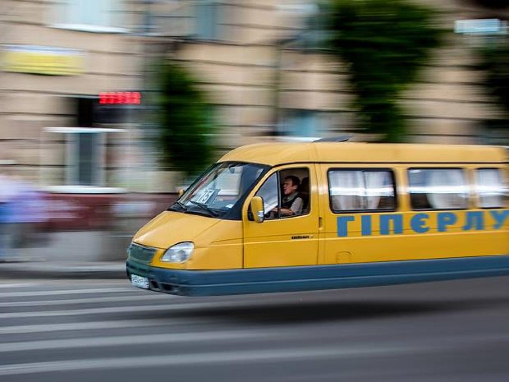

Перший Hyperloop в Україні побудують між Львовом і Жовквою. Завдяки надшвидкому переміщенню у вакуумному тунелі відстань між цими містами можна буде подолати за 30 секунд, з урахуванням двох зупинок по 5 секунд в Дрогобичі та Червонограді, повідомляє видання «Гіперлупові відомості».
Співробітник Міністерства інфраструктури Степан Маркович Бубенець, який попросив називати його анонімним джерелом, розповів журналістам про найближчі плани виходу гіперлуп в Україну.
«Орієнтовна вартість проекту Львів-Жовква становить 5 мільярдів доларів, вартість квитків – від 5000 грн. за половину місця в плацкарті, – ділиться інформацією з журналістами Степан. – При такій вартості квитків проект окупиться всього за 80 років. Гроші в бюджеті для цього є, щоправда для їх виділення потрібно буде заморозити на 5 років будівництво та ремонт доріг в Луцькій, Івано-Франківській та Закарпатській областях, але то таке.»
| Ціна | Львів | Дрогобич | Червоноград | Жовква |
|---|---|---|---|---|
| Львів | --- | 1200 | 2800 | 5000 |
| Дрогоbич | 1200 | --- | 1400 | 3600 |
| Червоноград | 2800 | 1400 | --- | 2200 |
| Жовква | 5000 | 3600 | 2200 | --- |